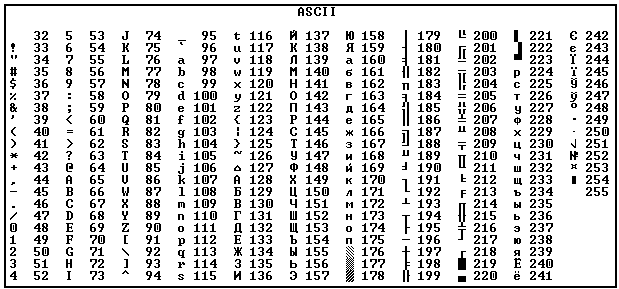

Kaidzu.com
Kaidzu.com Таймеры
Таймеры Си
Си C++
C++ Python
Python Миландр
МиландрТип данных char предназначен для хранения одного символа и занимает 1 байт (8 бит, значение CHAR_BIT из limits.h).
Спецификаторы формата %c - отображение символа (%d - отображение кода)
%x (%X большие буквы A-F) шестнадцатеричное представление
%o восьмеричное представление
Диапазон возможных значений:
-128 - 127 для char (значения CHAR_MIN и CHAR_MAX из limits.h)
0 - 255 для unsigned char (значение UCHAR_MAX из limits.h)
Перевод кодов в символы
'0'..'9' – цифры в формате символов (ASCII-коды: 48-57)
'A'..'Z' – заглавные (прописные) латинские буквы (ASCII-коды: 65-90)
'a'..'z' – маленькие (строчные) латинские буквы (ASCII-коды: 97-122)
// Выводит значения нажатых клавиш как символы и целые числа
#include <stdio.h> // printf()
#include <conio.h> // getch()
int main(){
char ch = 'a';
printf("%c \nPress a key (Esc for exit) \n", ch); // Выводим значение а и приглашение к нажатию кнопки(ок)
while(ch != 27){ // Выполнять пока не нажата кнопка Esc
ch = getch(); // Считываем символ
printf("%c, %d \n", ch, ch); // Выводим значение ch как символа и как числа
}
return 0;
}

Пример программы работы со строками.
// Переводит int, float, double в строку и обратно
#include <stdio.h> // printf(), sprintf_s()
#include <stdlib.h> // atoi(), atof(), strtod()
int main(){
char *str_int = "134"; // Строковое представление int
char *str_float = "2.72"; // Строковое представление float
char *str_double = "1.5"; // Строковое представление double
int val_int = atoi(str_int); // Преобразование строки в int
float val_float = atof(str_float); // Преобразование строки в float
double val_double = strtod(str_double, NULL); // Преобразование строки в double
printf("val_int = %d \n", val_int); // Вывод int
printf("val_float = %f \n", val_float); // Вывод float
printf("val_double = %f \n", val_double); // Вывод double
const int buf_size = 10; // Размер буфера для строкового представления чисел
char buf_int[buf_size]; // Буфер для int
char buf_float[buf_size]; // Буфер для float
char buf_double[buf_size]; // Буфер для double
sprintf_s(buf_int, buf_size, "%d", val_int); // Преобразование int в строку
sprintf_s(buf_float, buf_size, "%f", val_float); // Преобразование float в строку
sprintf_s(buf_double, buf_size, "%f", val_double); // Преобразование double в строку
printf("buf_int = %s \n", buf_int); // Вывод int
printf("buf_float = %s \n", buf_float); // Вывод float
printf("buf_double = %s \n", buf_double); // Вывод double
return 0;
}
Вывод программы: val_int = 134 val_float = 2.720000 val_double = 1.500000 buf_int = 134 buf_float = 2.720000 buf_double = 1.500000